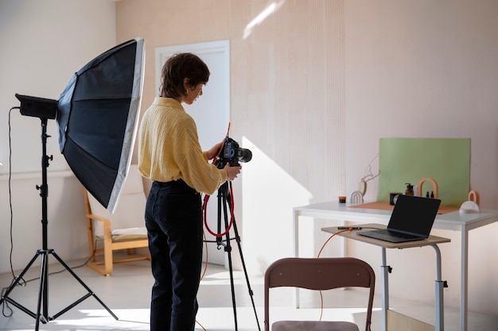
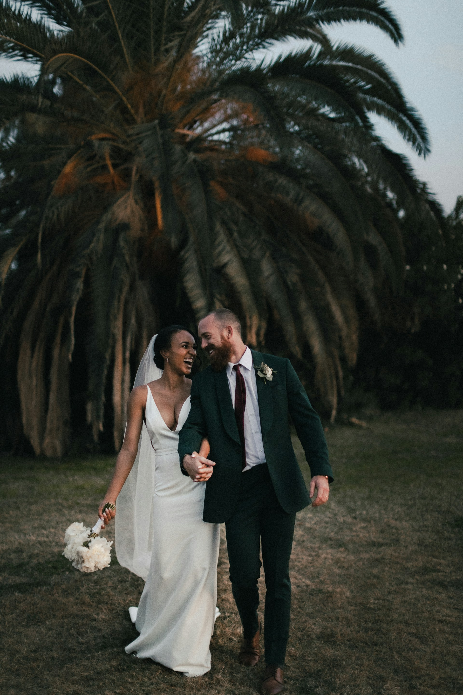

摄影技巧
WNA LYPING
创作方向
这些不是服务菜单，而是我长期探索的六条线索

ESSAYS · 思考
写作与思考
把零散的判断写成可以回看、讨论和继续生长的文字。

AI LAB · 实验
AI 与工作流
测试工具、组合流程，也诚实记录哪些方法真正解决了问题。

WEB · 构建
网站与产品
从一个模糊想法开始，把信息结构、界面与体验一点点做出来。

VISUAL · 观看
影像与记录
从地面到高空，用不同尺度观察城市、山海和普通的一天。

NOTES · 学习
学习笔记
将输入重新组织成自己的知识地图，保留过程而不只展示答案。

LIFE · 日常
生活片段
一些旅行、阅读、情绪与偶然发现，构成作品之外真实的我。